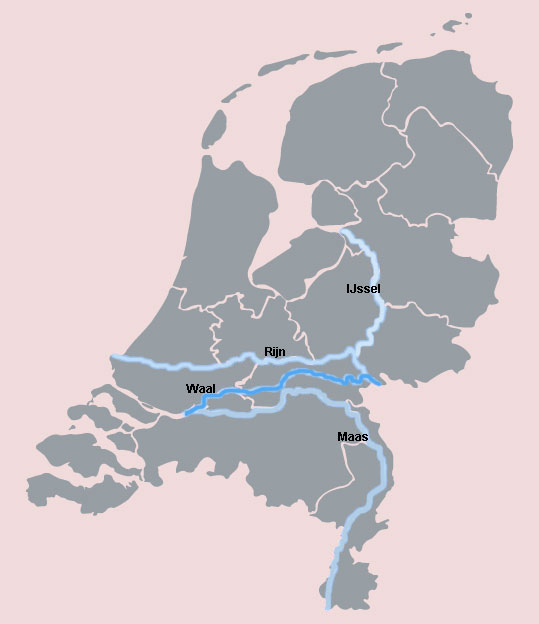

Rivieren in Nederland
|
In Limburg stroomt de Maas.
De Maas komt ten Zuiden van Maastricht Limburg binnen.
De bron van de Maas ligt in Frankrijk.
(We zeggen dat de Maas in Frankrijk ontspringt.)
Bij Nijmegen verlaat de Maas Limburg weer en stroomt dan naar het
Westen.
Ze stroomt via een zeearm uit in de Noordzee.
|

|
Er zijn nog twee andere grote rivieren in Nederland:
de Rijn en de Schelde.
Op onderstaande kaart zie je dat de Rijn twee zijrivieren heeft:
de Waal en de Ijssel.
De Waal komt in de Biesbosch samen met de Maas.
De Ijssel stroomt naar het Noorden en mondt uit in het Ijsselmeer.
De Rijn zelf stroomt naar de Noordzee.
De Schelde is op het kaartje van Nederland niet aangegeven,
want die rivier stroomt vooral in Belgie.
In Nederland mondt hij uit in de Westerschelde.
Dat is de meest zuidelijke zeearm in Zeeland.


Nederland is een rivierdelta van de Rijn, de Maas en de Schelde.
Een delta wordt gevormd door alle aftakkingen (= zijrivieren) van een rivier,
voordat die in de zee uitmondt.
Zoek op de kaart van
graphhopper
naar andere rivierdelta's.
Klik op het symbooltje rechtsboven en kies de "Lyrk"-kaart.
Kijk ook eens naar het satellietbeeld door "Esri Aerial" te kiezen.
De namen van de rivieren staan aangegeven - helaas nogal klein -
in de "OpenStreetMap"-kaart.